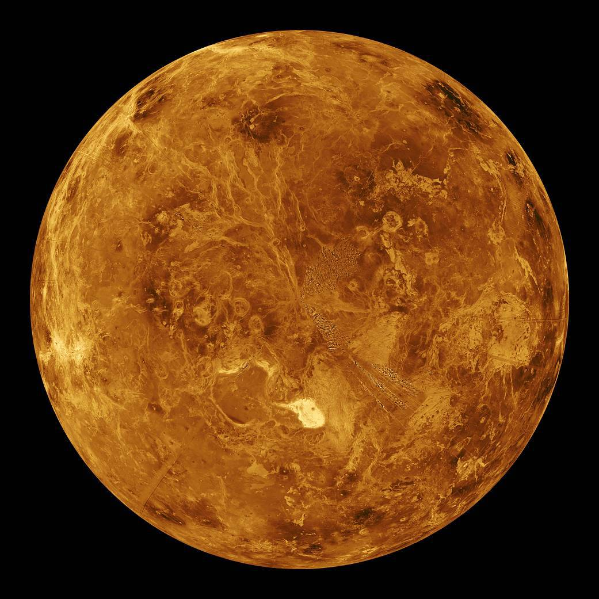

A Vénusz a második bolygó a Naptól, keringési ideje 224,7 földi nap. Nevét Venusról, a szépség római istennőjéről kapta. A Hold után a legfényesebb objektum az éjszakai égbolton, legnagyobb látszólagos fényessége -4,6 magnitúdó. Maximális fényességénél még nappal is észrevehető. Mivel a Vénusz kering a Nap körül és közelebb van hozzá, mint a Föld, ezért néhány hónapig a Naptól keletre, később néhány hónapig a Naptól nyugatra látható, változó távolságra. A keringés mindkét szélső pontjának látszólagos távolsága a Naptól, azaz a bolygó legnagyobb kitérése 47,8°, vagyis a Napot legfeljebb három órával követi, illetve előzi meg az égen.
A kalauzcsillagok közé tartozik, mivel segítette az embereket utazásaik során a tájékozódásban. Emiatt nagyon kedvelt volt és szívesen adtak különféle hangzatos neveket neki, külön a reggel látható és külön az esti Vénusz számára, mint például a Hajnalcsillag és Esti csillag nevet, amelyből keletkezett a jól ismert Esthajnalcsillag elnevezés.
| Naptávolság | 108 941 849 km |
| Egyenlítői sugár | 6051,8 km |
| Térfogat | 9,28×1011 km³ |
| Tömeg | 4,8685×1024 kg |
| Gravitácoó | 8,87 m/s² |
Nincs természetes holdja.